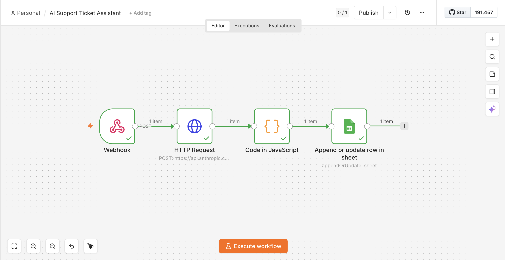
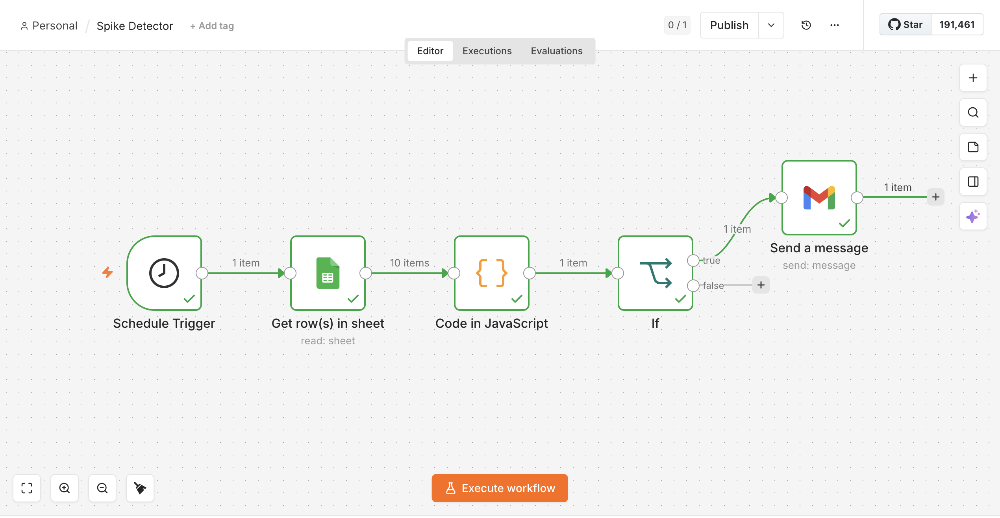

An automated approach to understanding, routing, and troubleshooting customer service tickets, and drawing attention to issues that may need discussion at a product level.
Customer service agents handling high volumes of support tickets spend significant time on manual triage: reading, categorising, and routing each ticket before any resolution begins. This creates mental overhead, slows response times, and makes it difficult to spot systemic issues early.
This project automates the triage layer and adds a pattern detection layer on top, shifting CX operations from reactive to proactive.
This workflow enables smoother communication across the entire support chain, starting from the customer all the way to the parties responsible for changes on a product level.
Receives an AI-generated summary, troubleshooting steps, and a suggested reply before fully reading the ticket, reducing mental load and speeding up first response.
Receives tickets already categorised by module with structured context, reducing back-and-forth between support and engineering teams.
Receives automated alerts when a specific module accumulates recurring tickets. This might be a signal that something systemic may need cross-functional attention.
Each tool was picked to keep the build low-code and fast to iterate on, while still resembling how a real support stack would connect.
Low-code orchestration layer. Lets the whole pipeline be built and rewired visually, without standing up custom backend infrastructure.
Does the actual reasoning: classifying tickets, summarising context, and drafting troubleshooting steps and replies as structured JSON.
Stand-in for a proper ticket database. Free and easy to inspect while prototyping, with an obvious upgrade path to a real database in production.
Simulates how a real ITSM tool (e.g. Zendesk, Jira) would push new tickets in, and how the workflow talks to external services like the Claude API.
Custom code nodes handle the logic built-in nodes can't: parsing the LLM's response and running the spike-detection calculation.
Delivers the CX Operations alert email, so a spike in a module reaches a person who can act on it, not just a row in a spreadsheet.
Runs continuously in the background. Every incoming support ticket is automatically processed and logged with no manual effort required.
An incoming ticket is received as a JSON payload containing ticket ID, subject line, and body, simulating a real ITSM integration such as Zendesk or Jira.
The ticket is sent to the Claude API with module (product feature/offering) context in the system prompt. The model returns category, urgency, a one-sentence summary, troubleshooting steps, and a suggested customer reply, all as structured JSON.
A JavaScript code node strips any formatting from the API response and parses it into clean JSON ready for downstream use.
All fields, with a generated ISO timestamp added, are appended to a shared ticket log. For simplicity, Google Sheets was used in this case. This will serve as a starting point for the second layer of this solution.
"category": "payroll", "urgency": "high", "summary": "Three employees missing payslips after March payroll run, needed urgently for bank loan applications.", "troubleshooting_steps": [ "Check payroll run status under Payroll › Payroll Runs", "Verify payslip visibility at admin vs self-service level", "Review employee role permissions under Settings › Employee Roles", "..." ], "suggested_reply": "Thank you for reaching out — we're treating this as high priority..."

Runs automatically every 15 minutes. Monitors the ticket log for unusual concentrations of issues within a single module, drawing the attention of CX operations to potential deeper issues within the module.
Fires automatically every 60 minutes.
Pulls all rows from the Google Sheets ticket log for analysis.
A JavaScript code node filters tickets from the last 15 minutes, groups them by module, and identifies the module with the highest concentration of recent tickets. Triggers if 3 or more tickets appear in a single module.
If a spike is detected, an HTML email is sent to the CX Operations Manager summarising which module is affected, how many tickets, and which IDs, attaching a brief recommendation to assess whether the pattern indicates a systemic issue.
4 tickets have been recorded in the last 15 minutes. The module with the highest concentration is Payroll with 4 tickets. This may indicate a systemic issue beyond individual bugs.
| Top Module | Payroll |
| Tickets in Module | 4 |
| Affected Ticket IDs | T001, T011, T012, T013 |
We recommend reviewing whether this pattern points to a process gap, a documentation issue, or a product-level change that needs cross-functional discussion.

Taking this from prototype to production means revisiting nearly every step in both workflows.
The webhook stands in for a real ITSM integration. Production means a proper connector for whichever tool the company runs, Zendesk, Jira Service Management, Freshdesk, each with its own schema, authentication, and rate limits.
The system prompt hard-codes module definitions. That doesn't hold up past a handful of modules, so this would need to pull from an internal knowledge base or retrieval layer instead of manual rewrites every time the product changes.
An AI-drafted reply can't go straight to a customer unreviewed. Until there's a track record of accuracy, it should sit as a draft for the agent to approve, not an auto-send.
Google Sheets accepts anything; a real ITSM ticket means mapping to existing fields, handling a ticket an agent may already be editing, and getting write access most IT teams don't hand out lightly.
A shared sheet becomes a live query against the real ITSM system, at whatever volume it actually runs.
A fixed count of three tickets in 15 minutes is calibrated to this dataset, not to a module that might see fifty tickets an hour versus one that sees two. Production needs a threshold relative to each module's own baseline.
A CX lead acting on a false or under-explained alert has a real cost. Production alerts need trend context over days, not just the last hour, and should create a tracked, ownable item in existing ops tooling, not just an email.